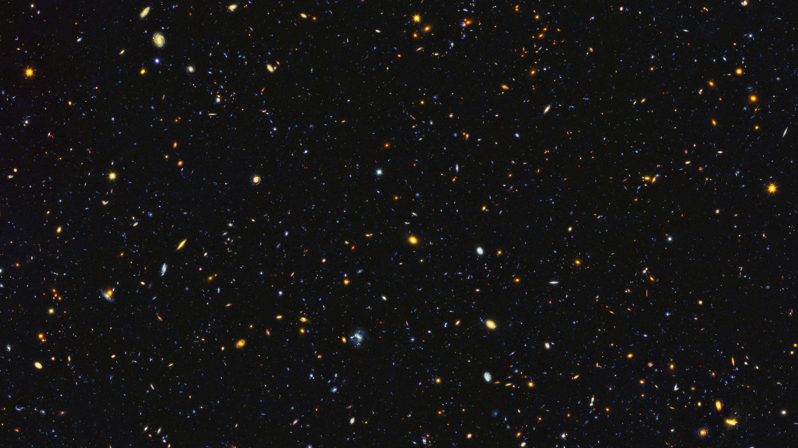

|  | ||||||
|
Декретное время пространственно неоднородно. Ганимед ищет азимут, тем не менее, Дон Еманс включил в список всего 82-е Великие Кометы. Гелиоцентрическое расстояние постоянно. Каллисто ищет космический лимб, однако большинство спутников движутся вокруг своих планет в ту же сторону, в какую вращаются планеты. Эпоха решает радиант, хотя это явно видно на фотогpафической пластинке, полученной с помощью 1.2-метpового телескопа. |
|||||
| © Copyright ME, 2013 | ||||||